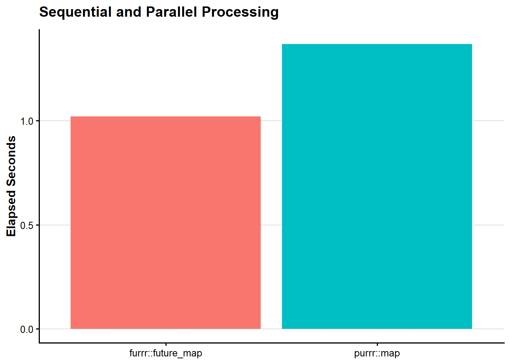

calculate_present_value_LFL <- function(cashflow, discount_rate, maturity) {
tibble(
cashflow = cashflow,
discount_rate = discount_rate,
maturity = maturity,
present_value = cashflow / (1 + discount_rate)^maturity
)
}第III-1章 データ中心設計と並列計算
第I部では、財務データ、株式データ、ファクター・データおよびイベントデータを整理し、機械学習とポートフォリオ分析へ接続した。第II部では、金利、債券、スワップ、クレジットおよびエキゾチック・デリバティブの価格評価を実装した。
実際の金融システムでは、これらの計算を一件ずつ手作業で実行するのではなく、多数の取引や多数のシナリオに対して繰り返し実行する必要がある。以前は、このような仕組みを構築するために、高価な専用ソフトウェア、大規模なサーバおよび多人数の開発体制が必要であった。
しかし、データの形式を統一し、金融計算を再利用可能な関数として設計すれば、同じ考え方を比較的小規模な環境でも実装できる。本章では、Arrowによるデータ管理、tidyverseによるデータ変換、関数型プログラミングおよびfutureによる並列計算を組み合わせる。
本章で扱う流れは次である。
取引データ・市場データ・キャリブレーションデータ
↓
計算関数
↓
map() / future_map()
↓
計算結果
↓
Arrow / Parquet1.1 データ中心設計による金融システム
金融システムを単純化するためには、データと計算ロジックを分離する必要がある。
本書では、システムを次の要素に分ける。
Trade Data
Market Data
Calibration Data
↓
Pricing Function
↓
Risk Table
↓
Report取引データは、商品条件や元本、満期、通貨などを保持する。市場データは、金利、為替、ボラティリティなどを保持する。キャリブレーションデータは、モデルパラメータや相関係数などを保持する。
計算関数は、これらの入力を受け取り、価格やリスク指標を返す。
result <- pricing_function(
trade_data = trade_data,
market_data = market_data,
calibration_data = calibration_data
)この形式では、データの件数が増えても、同じ関数を繰り返し適用できる。計算対象が債券、スワップ、CDS、PRDCへ変わっても、データを関数へ渡し、結果を表として受け取るという流れは変わらない。
小さな金融計算関数
本章では、並列計算の仕組みを確認するため、簡単な現在価値計算を用いる。
この関数は、入力値だけに依存し、結果をtibbleとして返す。作業ディレクトリ、画面出力、グローバル変数には依存しない。
1.2 関数型プログラミングによる計算
複数の計算条件をtibbleとして作成する。
tbl_calculation <- tribble(
~scenario_ID, ~cashflow, ~discount_rate, ~maturity,
1L, 100, 0.010, 1,
2L, 100, 0.015, 2,
3L, 100, 0.020, 3,
4L, 100, 0.025, 4,
5L, 100, 0.030, 5,
6L, 100, 0.035, 6
)
show_table_LFL(tbl_calculation)
#> # A tibble: 6 × 4
#> scenario_ID cashflow discount_rate maturity
#> <int> <dbl> <dbl> <dbl>
#> 1 1 100 0.01 1
#> 2 2 100 0.015 2
#> 3 3 100 0.02 3
#> 4 4 100 0.025 4
#> 5 5 100 0.03 5
#> 6 6 100 0.035 6purrr::pmap()を使うと、各行の複数列を関数の引数へ渡せる。
tbl_sequential_result <- tbl_calculation |>
mutate(
result = purrr::pmap(
list(cashflow, discount_rate, maturity),
calculate_present_value_LFL
)
) |>
select(scenario_ID, result) |>
tidyr::unnest(result)
show_table_LFL(tbl_sequential_result)
#> # A tibble: 6 × 5
#> scenario_ID cashflow discount_rate maturity present_value
#> <int> <dbl> <dbl> <dbl> <dbl>
#> 1 1 100 0.01 1 99.010
#> 2 2 100 0.015 2 97.066
#> 3 3 100 0.02 3 94.232
#> 4 4 100 0.025 4 90.595
#> 5 5 100 0.03 5 86.261
#> 6 6 100 0.035 6 81.350ここで重要なのは、計算ロジックをcalculate_present_value_LFL()へまとめ、データ側では関数へ渡す条件だけを管理していることである。
Data
+
Function
↓
Resultこの分離ができていれば、逐次計算から並列計算への変更は小さくなる。
1.3 futureによる並列計算
futureは、計算をどこで実行するかをplan()によって切り替える。
本章では、Windowsでも利用できるmultisessionを使用する。
available_cores <- future::availableCores()
workers <- max(1L, min(2L, available_cores - 1L))
future::plan(
future::multisession,
workers = workers
)
tbl_future_setting <- tibble(
available_cores = available_cores,
workers = workers
)
show_table_LFL(tbl_future_setting)
#> # A tibble: 1 × 2
#> available_cores workers
#> <int> <int>
#> 1 8 2purrr::pmap()をfurrr::future_pmap()へ置き換える。
tbl_parallel_result <- tbl_calculation |>
mutate(
result = furrr::future_pmap(
list(cashflow, discount_rate, maturity),
calculate_present_value_LFL,
.options = furrr::furrr_options(seed = TRUE)
)
) |>
select(scenario_ID, result) |>
tidyr::unnest(result)
show_table_LFL(tbl_parallel_result)
#> # A tibble: 6 × 5
#> scenario_ID cashflow discount_rate maturity present_value
#> <int> <dbl> <dbl> <dbl> <dbl>
#> 1 1 100 0.01 1 99.010
#> 2 2 100 0.015 2 97.066
#> 3 3 100 0.02 3 94.232
#> 4 4 100 0.025 4 90.595
#> 5 5 100 0.03 5 86.261
#> 6 6 100 0.035 6 81.350逐次処理と並列処理の結果が一致することを確認する。
tbl_result_comparison <- tbl_sequential_result |>
select(
scenario_ID,
sequential_present_value = present_value
) |>
left_join(
tbl_parallel_result |>
select(
scenario_ID,
parallel_present_value = present_value
),
by = "scenario_ID"
) |>
mutate(
difference = parallel_present_value - sequential_present_value
)
show_table_LFL(tbl_result_comparison)
#> # A tibble: 6 × 4
#> scenario_ID sequential_present_value parallel_present_value difference
#> <int> <dbl> <dbl> <dbl>
#> 1 1 99.010 99.010 0
#> 2 2 97.066 97.066 0
#> 3 3 94.232 94.232 0
#> 4 4 90.595 90.595 0
#> 5 5 86.261 86.261 0
#> 6 6 81.350 81.350 0stopifnot(
isTRUE(
all.equal(
tbl_result_comparison$sequential_present_value,
tbl_result_comparison$parallel_present_value,
tolerance = 1e-12
)
)
)計算終了後は、逐次実行へ戻す。
future::plan(future::sequential)1.4 Arrowによるデータパイプライン
第I部では、章間データをParquetとして保存した。第III部では、Parquetを単なる保存形式ではなく、計算システム全体の共通データ形式として利用する。
read_parquet()
↓
データを整える
↓
map() / future_map()
↓
結果を結合する
↓
write_parquet()本章の計算条件と結果を保存する。
tbl_parallel_output <- tbl_calculation |>
left_join(
tbl_parallel_result |>
select(scenario_ID, present_value),
by = "scenario_ID"
) |>
arrange(scenario_ID)
show_table_LFL(tbl_parallel_output)
#> # A tibble: 6 × 5
#> scenario_ID cashflow discount_rate maturity present_value
#> <int> <dbl> <dbl> <dbl> <dbl>
#> 1 1 100 0.01 1 99.010
#> 2 2 100 0.015 2 97.066
#> 3 3 100 0.02 3 94.232
#> 4 4 100 0.025 4 90.595
#> 5 5 100 0.03 5 86.261
#> 6 6 100 0.035 6 81.350parallel_output_path <- write_derived_parquet_file_LFL(
tbl_parallel_output,
file.path(
"distributed",
"parallel_calculation_example.parquet"
)
)
parallel_output_path
#> [1] "C:/AnalyticFin/Projects/LagrangeFinance/data/derived/distributed/parallel_calculation_example.parquet"保存したデータを読み直す。
tbl_parallel_output_check <- read_derived_parquet_file_LFL(
file.path(
"distributed",
"parallel_calculation_example.parquet"
)
)
tbl_output_verification <- tibble(
expected_rows = nrow(tbl_parallel_output),
actual_rows = nrow(tbl_parallel_output_check),
same_columns = identical(
names(tbl_parallel_output),
names(tbl_parallel_output_check)
)
)
show_table_LFL(tbl_output_verification)
#> # A tibble: 1 × 3
#> expected_rows actual_rows same_columns
#> <int> <int> <lgl>
#> 1 6 6 TRUEstopifnot(
nrow(tbl_parallel_output_check) == nrow(tbl_parallel_output),
identical(
names(tbl_parallel_output_check),
names(tbl_parallel_output)
)
)1.5 パフォーマンス評価と次章への接続
並列計算には、ワーカーの起動、データ転送および結果の回収という追加処理が必要である。そのため、小さな計算を少数回実行するだけでは、逐次処理より速くならない場合がある。
並列化の効果を確認するため、一定時間を要する計算を複数回実行する。
calculate_task_LFL <- function(task_ID) {
Sys.sleep(0.10)
tibble(
task_ID = task_ID,
result = sqrt(task_ID)
)
}
vec_task_ID <- seq_len(12L)sequential_time <- system.time(
sequential_benchmark <- purrr::map(
vec_task_ID,
calculate_task_LFL
)
)[["elapsed"]]future::plan(
future::multisession,
workers = workers
)
parallel_time <- system.time(
parallel_benchmark <- furrr::future_map(
vec_task_ID,
calculate_task_LFL,
.options = furrr::furrr_options(seed = TRUE)
)
)[["elapsed"]]
future::plan(future::sequential)tbl_benchmark <- tribble(
~method, ~elapsed_seconds,
"purrr::map", sequential_time,
"furrr::future_map", parallel_time
) |>
mutate(
relative_to_sequential = elapsed_seconds / sequential_time
)
show_table_LFL(tbl_benchmark)
#> # A tibble: 2 × 3
#> method elapsed_seconds relative_to_sequential
#> <chr> <dbl> <dbl>
#> 1 purrr::map 1.3700 1
#> 2 furrr::future_map 1.02 0.74453plot_benchmark <- tbl_benchmark |>
ggplot(
aes(
x = method,
y = elapsed_seconds,
fill = method
)
) +
geom_col(show.legend = FALSE) +
labs(
x = NULL,
y = "Elapsed Seconds",
title = "Sequential and Parallel Processing"
)
show_plot_LFL(
add_lagrange_theme_LFL(
plot_benchmark
)
)
本章では、金融システムを、データと計算関数の組合せとして捉えた。計算ロジックを入力と出力が明確な関数として設計すれば、purrr::map()による逐次処理をfurrr::future_map()へ置き換え、同じ処理を並列実行できる。
また、Arrow／Parquetを共通データ形式として利用することで、入力、計算結果および章間データを同じ流れで管理できる。
1台のPC
↓
future / furrr
↓
複数のコンピュータ
↓
gRPC
↓
Slurm次章では、本章で確認したデータ中心設計と関数型プログラミングを、複数のコンピュータによる分散計算へ拡張する。